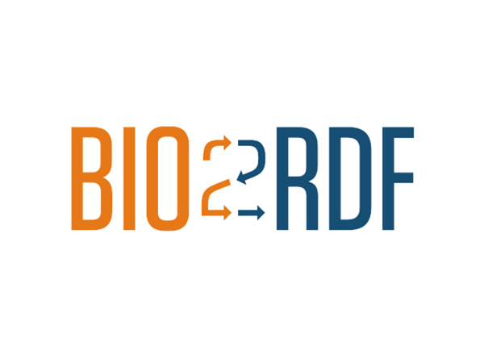

APIs Used
Anybody in the pharmaceutical industry knows that drugs are a messy thing to deal with... from the a data perspective. Here are all the tools needed to bring this project to life

NLM Pubmed
For literature relevant retrieval

bio2rdf.org
Extrenal linkage to over 150 datasets via MeSH identifiers